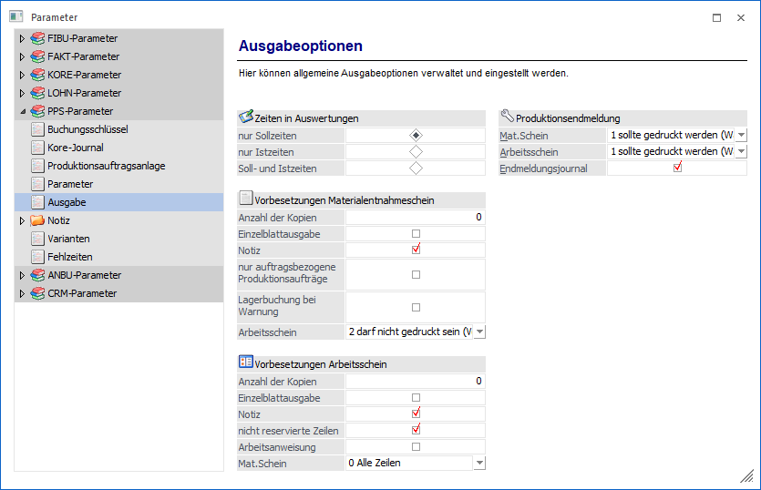
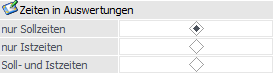
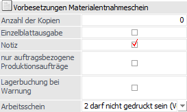
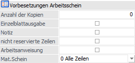
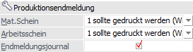

Über den Bereich "PPS-Parameter - Ausgabe" können allgemeine Ausgabeoptionen definiert werden.
Hinweis
Standardmäßig wird das Fenster in einem "Lesemodus" geöffnet, d.h. es können die bestehenden Einstellungen kontrolliert, Änderungen allerdings nicht durchgeführt werden. Hierfür muss zunächst mit Hilfe des Buttons "Bearbeiten" der "Bearbeitungsmodus" aktiviert werden. Alternativ kann diese Aktivierung auch über das Kontextmenü der rechten Maustaste (Funktion "Applikation xxx bearbeiten") erfolgen.

Zeiten in Auswertung

Ø nur Sollzeiten / nur Istzeiten / Soll- und Istzeiten
An dieser Stelle kann definiert werden, ob in den Auswertungen Soll-, Ist- oder beide Zeiten dargestellt werden sollen.
Vorbesetzungen Materialentnahmeschein

Ø Anzahl der Kopien / Einzelblattausgabe / Notiz / nur auftragsbezogene Produktionsaufträge
Mit Hilfe dieser Optionen kann eine optimale Vorbesetzung für den Druck des Materialentnahmescheins erfolgen.
Ø Lagerbuchung bei Warnung
Durch Aktivierung dieser Option wird trotz Lagerstandsunterschreitung ein Materialentnahmeschein gedruckt und die Lagerbuchung durchgeführt, obwohl definiert wurde, dass eine Lagerstandsunterschreitung nur mit Warnung erlaubt ist.
Ø Arbeitsschein
Mit den Selektionen in diesem Feld kann der Wert im Feld "Arbeitsschein" im Fenster "Materialentnahme" vorbesetzt werden. Es stehen die folgenden Selektionen zur Auswahl:
ü 0 - Alle Zeilen
ü 1 - muss gedruckt sein
(Vorschlag)
Mit dieser Selektion kann die entsprechende Vorbesetzung manuell
im Fenster " Materialentnahme" übersteuert werden.
ü 2 - darf nicht gedruckt sein
(Vorschlag)
Mit dieser Selektion kann die entsprechende Vorbesetzung manuell
im Fenster " Materialentnahme" übersteuert werden.
ü 3 - muss gedruckt sein
(Fix)
Mit dieser Selektion kann die entsprechende Vorbesetzung manuell im
Fenster " Materialentnahme" nicht übersteuert werden.
ü 4 - darf nicht gedruckt sein
(Fix)
Mit dieser Selektion kann die entsprechende Vorbesetzung manuell im
Fenster " Materialentnahme" nicht übersteuert werden.
Hinweis
Wird an dieser Stelle und bei "Mat.Schein" (siehe Bereich "Vorbesetzung Arbeitsschein") jeweils "4 - darf nicht gedruckt sein (Fix)" hinterlegt, so kann pro Produktionsauftrag / Arbeitsschritt nur noch der Material- oder Arbeitsschein ausgegeben werden (erste Ausgabe "gewinnt").
Sollte hingegen jeweils "3 - muss gedruckt sein (Fix)" hinterlegt werden, so darf gar kein Schein über die WinLine PPS ausgegeben werden (z.B. für Unternehmen geeignet, welche nur über das PPS-EXIM arbeiten).
Vorbesetzungen Arbeitsschein

Ø Anzahl der Kopien / Einzelblattausgabe / Notiz / nur reservierte Zeilen
Mit Hilfe dieser Optionen kann eine optimale Vorbesetzung für den Druck des Arbeitsscheins erfolgen.
Ø Mat.Schein
Mit den Selektionen in diesem Feld kann der Wert im Feld "Mat.Schein" im Fenster "Arbeitsschein" vorbesetzt werden. Es stehen die folgenden Selektionen zur Auswahl:
ü 0 - Alle Zeilen
ü 1 - muss gedruckt sein
(Vorschlag)
Mit dieser Selektion kann die entsprechende Vorbesetzung manuell
im Fenster "Arbeitsschein" übersteuert werden.
ü 2 - darf nicht gedruckt sein
(Vorschlag)
Mit dieser Selektion kann die entsprechende Vorbesetzung manuell
im Fenster "Arbeitsschein" übersteuert werden.
ü 3 - muss gedruckt sein
(Fix)
Mit dieser Selektion kann die entsprechende Vorbesetzung manuell im
Fenster "Arbeitsschein" nicht übersteuert werden.
ü 4 - darf nicht gedruckt sein
(Fix)
Mit dieser Selektion kann die entsprechende Vorbesetzung manuell im
Fenster "Arbeitsschein" nicht übersteuert werden.
Hinweis
Wird an dieser Stelle und bei "Arbeitsschein" (siehe Bereich "Vorbesetzung Materialentnahmeschein") jeweils "4 - darf nicht gedruckt sein (Fix)" hinterlegt, so kann pro Produktionsauftrag / Arbeitsschritt nur noch der Material- oder Arbeitsschein ausgegeben werden (erste Ausgabe "gewinnt").
Sollte hingegen jeweils "3 - muss gedruckt sein (Fix)" hinterlegt werden, so darf gar kein Schein über die WinLine PPS ausgegeben werden (z.B. für Unternehmen geeignet, welche nur über das PPS-EXIM arbeiten).
Produktionsendmeldung

Ø Mat.Schein
Mit Hilfe der Auswahlliste kann das Verhalten in der Produktionsendmeldung, bezogen auf den Druck des Materialentnahmescheins, definiert werden. Folgende Varianten stehen zur Verfügung:
ü 0 - muss nicht gedruckt
werden
Unabhängig davon, ob der Materialentnahmeschein gedruckt wurde oder
nicht kann die Endmeldung ohne Hinweise / Warnungen durchgeführt werden.
ü 1 - sollte gedruckt werden
(Warnung)
Bei der Produktionsendmeldung erscheint eine Warnung, wenn der
Materialentnahmeschein noch nicht gedruckt wurde. Die Endmeldung kann jedoch
trotzdem durchgeführt werden.
Zusätzlich wird voreingestellt, dass die
Arbeitsanweisung erst nach Druck des Materialscheines ausgegeben werden
kann.
ü 2 - muss gedruckt werden
Die
Produktionsendmeldung kann erst nach dem Druck des Materialentnahmescheins
erfolgen.
Zusätzlich wird voreingestellt, dass die Arbeitsanweisung erst nach
Druck des Materialscheines ausgegeben werden kann.
Ø Arbeitsschein
Mit Hilfe der Auswahlliste kann das Verhalten in der Produktionsendmeldung, bezogen auf den Druck des Arbeitsscheins, definiert werden. Folgende Varianten stehen zur Verfügung:
ü 0 - muss nicht gedruckt
werden
Unabhängig davon, ob der Arbeitsschein gedruckt wurde oder nicht kann
die Endmeldung ohne Hinweise / Warnungen durchgeführt werden.
ü 1 - sollte gedruckt werden
(Warnung)
Bei der Produktionsendmeldung erscheint eine Warnung, wenn der
Arbeitsschein noch nicht gedruckt wurde. Die Endmeldung kann jedoch trotzdem
durchgeführt werden.
ü 2 - muss gedruckt werden
Die
Produktionsendmeldung kann erst nach dem Druck des Arbeitsscheins erfolgen.
Ø Endmeldungsjournal
Wenn diese Option aktiviert wurde, so wird ein Produktionsjournal bei der (Teil-)Endmeldung bzw. Schnellendmeldung erzeugt.